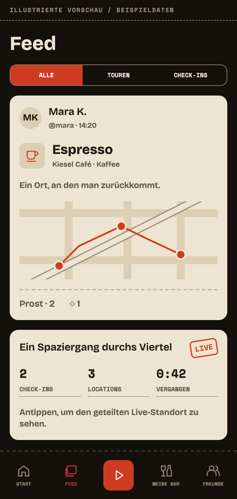
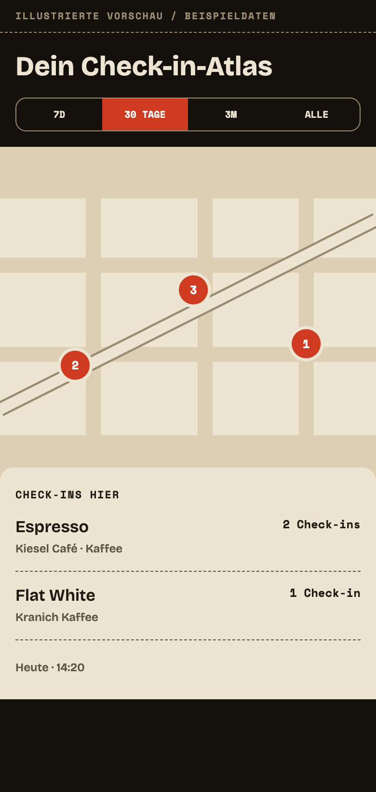
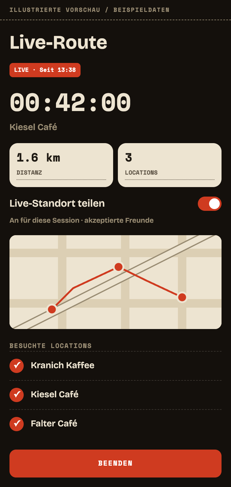

Orte entdecken.
Routen festhalten.
Entdecke Orte zu Fuß. CheersOida zeichnet deine Route auf, erkennt Stopps an Locations und sammelt deine Check-ins auf einer Karte. Teile den Ausflug mit Freunden und finde besuchte Orte später im Atlas wieder.
Aktuell in geschlossener Vorschau
Android und iOS sind per Einladung zugänglich. Schreib an cheers@cheersoida.app, um Zugang und die Installationsschritte für dein Gerät zu erhalten.
- Du bekommst eine E-Mail von Apple mit der TestFlight-Einladung.
- Falls noch nicht installiert: lade dir die kostenlose TestFlight-App aus dem App Store.
- Tippe in der E-Mail auf In TestFlight anzeigen — CheersOida erscheint in deiner TestFlight-App.
- Tippe auf Installieren. Die App landet wie gewohnt auf deinem Home-Bildschirm.
- Du bekommst eine E-Mail mit einem Link zum Google Play Test-Eintrag.
- Öffne den Link auf deinem Android-Handy und tippe auf Tester werden.
- Sobald du angenommen bist, lässt sich CheersOida wie jede andere Play-Store-App installieren.
- Updates kommen automatisch — du musst nichts weiter tun.
Losgehen, ankommen, wiederfinden
Starte eine Route, sammle Stopps und behalte besuchte Orte im Blick.
Besuchte Orte im Blick
Automatische Stopps, eine persönliche Check-in-Karte und Freunde unterwegs.
Ein Blick in CheersOida
Illustrierte Vorschauen des aktuellen Designs mit Beispieldaten. Dies sind keine Geräte-Screenshots.



Fragen
So funktionieren Ortung, Freigaben und der Umgang mit deinen Daten.
Welche Daten nutzt die App?
Ein Konto, Profildaten, Standortpunkte während aktiver Sessions, Check-ins, optionale Fotos und Notizen, Freundschaften und Benachrichtigungs-Token. Die Live-Freigabe nutzt außerdem einen ersetzbaren Standortpunkt mit Zeitstempel und Genauigkeit. Details zu Sichtbarkeit, Bildlinks, Diensten und Löschung stehen auf der Datenschutz-Seite.
Was sehen Freunde, während ich unterwegs bin?
Neue Sessions teilen deinen letzten Standort standardmäßig mit akzeptierten Freunden. Du kannst das im Live-Bildschirm für die Session ausschalten; jede neue Session startet wieder mit eingeschalteter Freigabe. Freunde sehen den letzten Punkt, sein Alter und die GPS-Genauigkeit, aber keine Wiedergabe deiner gesamten Live-Route. Nach einer Minute gilt ein Punkt als veraltet, nach fünf Minuten wird er ausgeblendet. Online entfernt Ausschalten oder Beenden den Punkt. Beendest du offline, werden keine neuen Punkte gesendet; der letzte geteilte Punkt verfällt innerhalb von fünf Minuten. Gruppenmitglieder können für Gruppenfunktionen ebenfalls letzte Positionen erhalten. Beendete Routen sind für akzeptierte Freunde verfügbar.
Wird jeder Besuch automatisch erkannt?
Nicht immer. Die Erkennung nutzt mehrere GPS-Punkte und die Aufenthaltsdauer nahe einer bekannten Location. Schlechter Empfang, eng beieinanderliegende Orte oder fehlende Kartendaten können das Ergebnis beeinflussen. Du kannst fehlende Locations ergänzen; eine Erkennung jedes Stopps ist nicht garantiert.
Läuft die Ortung bei ausgeschaltetem Bildschirm weiter?
Während einer aktiven Session kann die Ortung mit deiner Erlaubnis im Hintergrund weiterlaufen. Android nutzt einen sichtbaren Vordergrunddienst; iOS zeigt die Standortanzeige. Die App fragt nach Standortfreigabe beim Verwenden, nicht nach „Immer“. Mit Beenden stoppst du die Session-Ortung. Beim Eintragen eines Check-ins kann separat dein Standort verwendet werden.
Was funktioniert ohne Internet?
Nach dem Session-Start werden Standortpunkte lokal gespeichert. Check-ins und Fotos können in der Warteschlange bleiben und bei erneuter Verbindung übertragen werden. Neue Sessions, Live-Freigabe, Freundesaktionen, neue Kartenkacheln und Ortsdaten brauchen Netz. GPS-Empfang kann in Gebäuden oder unterirdisch trotzdem schlecht sein.
Wie viel Akku braucht die Ortung?
Eine aktive Route nutzt GPS, Hintergrundverarbeitung und teilweise das Netz. Der Verbrauch hängt von Gerät, Empfang und Dauer ab; es gibt keinen festen Verbrauchswert. Beende die Session, wenn du fertig bist.
Kann ich den Verlauf löschen und mein Konto behalten?
Ja. Profil → Einstellungen → Alle meine Daten löschen entfernt Aktivitätsverlauf, Standortpunkte, Check-in-Fotos sowie Prost und Nachrichten an deinen Inhalten. Konto, Profil, Freunde und Benachrichtigungen bleiben bestehen. Konto löschen entfernt zusätzlich Konto und Profil. Die Bereinigung braucht eine Verbindung und gegebenenfalls einen erneuten Versuch. Erst die Bestätigung in der App meldet den Abschluss. Wenn du keinen Zugriff mehr hast, schreib an cheers@cheersoida.app.
Kontakt
Melde ein App-Problem, frag nach Zugang oder hol dir Hilfe zu deinem Konto.
Schicke Kontodaten oder Diagnoseprotokolle mit persönlichen Informationen per E-Mail statt in einem öffentlichen GitHub-Issue.